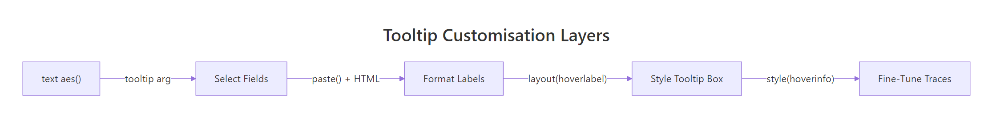
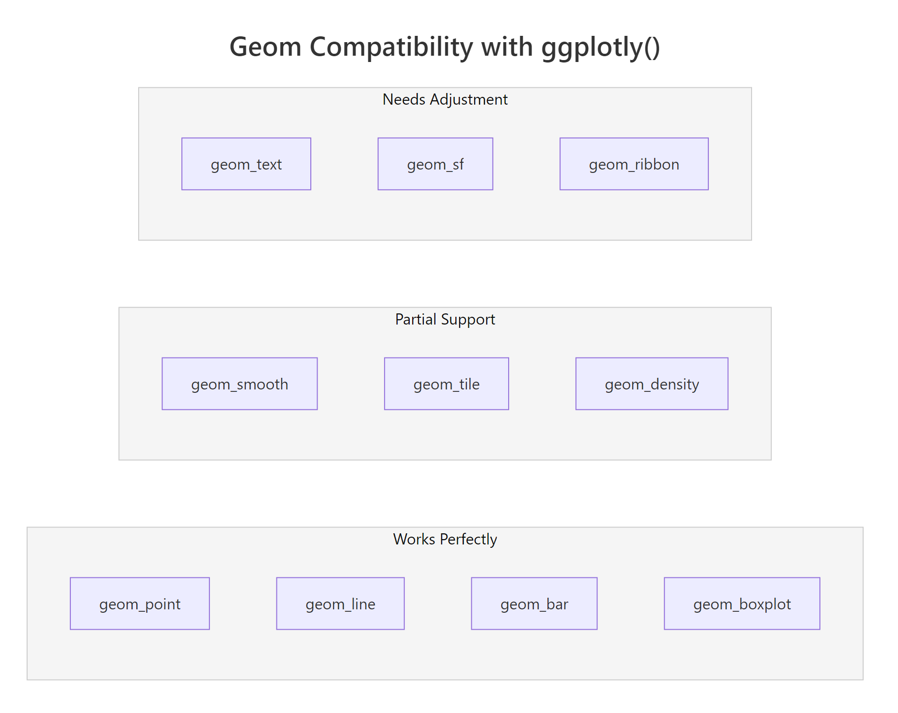
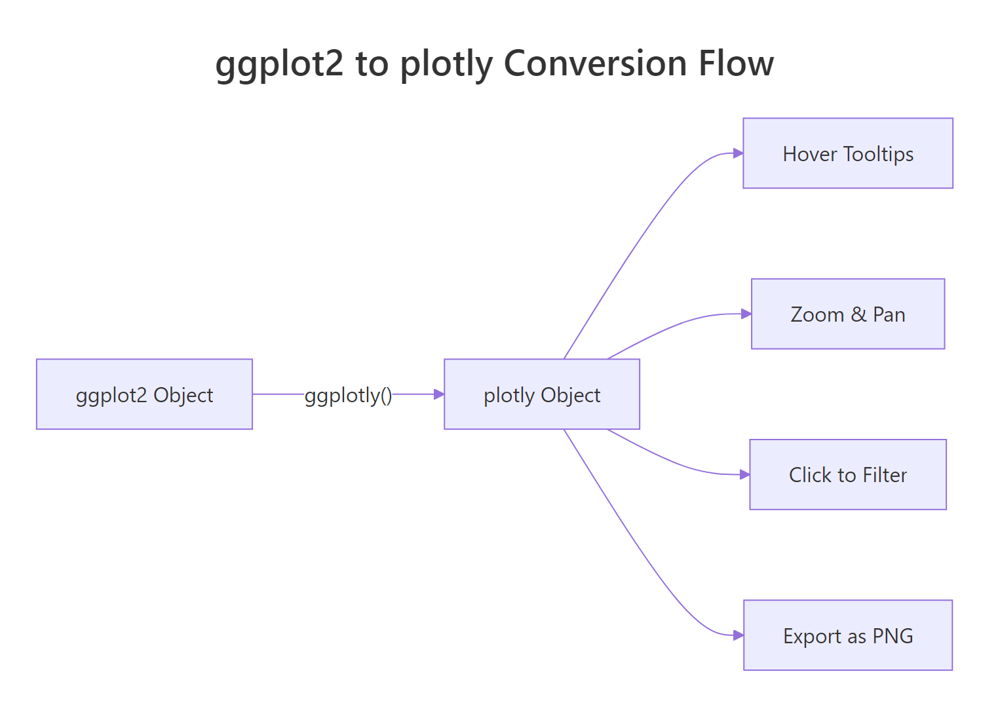

ggplot2 + plotly: Add Hover Tooltips and Zoom to Any Chart in One Line
ggplotly() converts any ggplot2 chart into an interactive plotly widget with hover tooltips, zoom, pan, and click-to-filter — in a single function call.
How Does ggplotly() Turn a Static Chart Interactive?
You have a polished ggplot2 scatter plot and your stakeholder asks "can I hover over the points to see which car that is?" With base ggplot2, the answer is a flat PNG. With plotly, the answer is one function call. ggplotly() reads every aesthetic, axis, and layer from your ggplot object and rebuilds it as a JavaScript widget the reader can explore.
That static chart already tells a story. Now make it interactive with a single line.
Every aesthetic you mapped in ggplot2 — colour, size, shape — carries over. The tooltip shows those mapped values by default, and the toolbar in the top-right corner lets users zoom, pan, and download the chart as a PNG.
Try it: Build a bar chart counting the number of cars per class in mpg using geom_bar(), then convert it with ggplotly().
Click to reveal solution
Explanation: ggplotly() works on any ggplot2 object, including bar charts. Hover shows the x category and count.
How Do You Control What Appears in the Tooltip?
By default, ggplotly() shows every mapped aesthetic in the tooltip — x, y, colour, size, and anything else in aes(). That's often too much. The tooltip argument lets you pick exactly which aesthetics appear.
Let's start by limiting the tooltip to just the x and y values.
That cleans up the hover, but sometimes you want a completely custom label — the car's manufacturer and model, plus formatted numbers. The text aesthetic is your tool for that.
When you set tooltip = "text", plotly ignores all the default aesthetics and only shows your custom label. This gives you full control over what readers see on hover.
<b> for bold, <br> for line breaks, <i> for italic. Write paste0("<b>", manufacturer, "</b><br>MPG: ", hwy) for a polished tooltip.Let's try HTML-formatted tooltips for a cleaner look.
The HTML approach makes tooltips readable even when you pack four or five fields into them.
Try it: Using the iris dataset, create a scatter plot of Sepal.Length vs Petal.Length coloured by Species. Build a custom tooltip showing the species name and petal length. Show only that tooltip.
Click to reveal solution
Explanation: Mapping text in aes() and passing tooltip = "text" to ggplotly() replaces the default tooltip with your custom label.
How Do You Style the Tooltip Box Itself?
Controlling what appears in the tooltip is half the story. The other half is how it looks. The layout() function controls the tooltip's background colour, font, and border. You chain it after ggplotly() using the pipe or the plotly-style %>%.
The hoverlabel argument accepts bgcolor, font (with family, size, color), and bordercolor. These apply globally to every trace in the chart.

Figure 2: Four layers of tooltip customisation, from basic text aesthetic to trace-level styling.
For charts with multiple traces — like a line chart with several groups — the default "closest" hover mode shows the tooltip for whichever point is nearest to the cursor. That works for scatter plots, but for time series you often want to compare all y-values at the same x.
hovermode = "x unified" for any chart with two or more overlapping traces.Try it: Take the scatter plot from the first section (engine size vs highway MPG) and style the tooltip with a light yellow background ("#FFFFF0") and a font size of 14.
Click to reveal solution
Explanation: layout(hoverlabel = list(...)) accepts bgcolor for background colour and font for text styling. Both apply to every trace.
Which ggplot2 Geoms Translate Well to plotly?
Not every geom survives the conversion equally. Most common geoms — points, lines, bars, boxplots — translate perfectly. A few lose features or need manual adjustment. Knowing which is which saves you debugging time.
Here's a quick demo. All three geoms below convert cleanly.
All three behave exactly as you'd expect. Now let's look at a geom that needs a small fix: geom_smooth().
Without the style() fix, hovering over the confidence band shows unhelpful "upper" and "lower" traces. The style(hoverinfo = "skip", traces = c(2, 3)) call tells plotly to skip hover on the smooth line and its CI band (traces 2 and 3), so only the scatter points respond to hover.

Figure 3: Geom compatibility spectrum — which ggplot2 geoms work best with ggplotly().
Here's the full compatibility table:
| Geom | Status | Notes |
|---|---|---|
geom_point() |
Perfect | All aesthetics carry over |
geom_line() |
Perfect | Hover shows x and y at each point |
geom_bar() / geom_col() |
Perfect | Hover shows category and count/value |
geom_boxplot() |
Perfect | Hover shows quartiles, median, outliers |
geom_histogram() |
Perfect | Hover shows bin range and count |
geom_smooth() |
Partial | CI band creates extra hover traces — use style() to suppress |
geom_tile() |
Partial | Works, but large heatmaps can be slow |
geom_density() |
Partial | Hover shows density values — sometimes noisy |
geom_text() |
Needs tweaks | Labels may overlap differently — use plotly's textposition |
geom_ribbon() |
Needs tweaks | Splits into upper/lower traces |
geom_sf() |
Needs tweaks | Consider plotly's native plot_geo() for maps |
plot_ly(type = "heatmap") instead of converting a ggplot2 tile grid.Let's also look at geom_text(). The labels convert, but plotly sometimes positions them differently than ggplot2.
For precise label positioning after conversion, plotly's layout(annotations = ...) gives you pixel-level control. But for most use cases, geom_text() plus a nudge_y works well enough.
Try it: Create a scatter plot of mtcars (wt vs mpg) with a geom_smooth(method = "lm") layer. Convert it with ggplotly() and suppress hover on the smooth trace using style().
Click to reveal solution
Explanation: geom_smooth() creates two extra traces (the fitted line and the confidence band). style(hoverinfo = "skip", traces = c(2, 3)) disables hover on those traces.
How Do You Control Zoom, Pan, and the Toolbar?
By default, click-drag zooms into a rectangular region. Double-click resets. The toolbar (modebar) in the top-right corner offers zoom, pan, lasso select, and download buttons. You can change all of these defaults.
Let's switch the default drag mode from zoom to pan.
Panning is more intuitive than zooming for time series, where readers want to scroll left and right through time.
The config() function controls the toolbar buttons. You can remove buttons you don't need, add a custom download format, or hide the toolbar entirely.
For time series data, the range slider gives readers a mini-map at the bottom of the chart. They can drag handles to zoom the x-axis while keeping the global view visible.
config(toImageButtonOptions = list(format = "svg", filename = "my_chart")) to let users download publication-quality SVGs. The default download format is PNG at screen resolution. SVG scales to any size and is preferred for papers and presentations.Try it: Take any line chart and set the default drag mode to "select" and remove the "lasso2d" button from the toolbar.
Click to reveal solution
Explanation: layout(dragmode = "select") sets the default interaction. config(modeBarButtonsToRemove = ...) removes specific toolbar buttons.
How Do You Animate a ggplot2 Chart with plotly?
plotly can animate your ggplot2 charts — scatter points that move across frames, bars that grow and shrink, lines that evolve. You add a frame aesthetic in ggplot2, and ggplotly() turns it into a play/pause animation with a slider.
Let's create some sample data with three time periods and animate a scatter plot.
The frame aesthetic tells plotly which variable defines the animation steps. plotly automatically adds a play button and a frame slider. Each unique value of year becomes one frame.
You can fine-tune the animation speed and transition style with animation_opts().
The frame parameter controls how long each frame stays visible (milliseconds). transition controls how long the morph between frames takes. easing accepts CSS easing names like "linear", "elastic", "bounce", and "cubic-in-out".
frame inside aes(). plotly handles the play button, slider, and transitions automatically. You don't need gganimate or any extra package — just one aesthetic mapping.Try it: Create an animated bar chart that shows the mean mpg for each cyl group in mtcars, using cyl as the frame variable. Use stat_summary() with fun = mean.
Click to reveal solution
Explanation: frame = factor(cyl) creates one animation frame per cylinder count. stat_summary() computes the mean for each gear group within each frame.
How Do You Save and Share an Interactive Chart?
Interactive charts aren't PNGs — they're HTML with embedded JavaScript. Saving and sharing them works differently than static plots.
The htmlwidgets::saveWidget() function saves any plotly chart as a self-contained HTML file that anyone can open in a browser.
The selfcontained = TRUE option bundles the plotly.js library inside the HTML file. The result is a single file anyone can open, even without R installed. The tradeoff is file size — plotly.js adds about 3 MB.
selfcontained = FALSE and host plotly.js separately. For email attachments and one-off sharing, self-contained is simpler.For R Markdown and Quarto documents, you don't need saveWidget() at all. Just print the plotly object in a code chunk and it renders inline.
Try it: Save one of the previous scatter plots as an HTML file named "scatter_interactive.html".
Click to reveal solution
Explanation: saveWidget() takes a plotly object and writes a standalone HTML file. selfcontained = TRUE bundles everything into one file.
Practice Exercises
Exercise 1: Custom Tooltip Scatter Plot
Build a scatter plot of mtcars with wt on x, mpg on y, coloured by factor(cyl). Create a custom tooltip showing the car name (use rownames(mtcars)), horsepower, and quarter-mile time. Style the tooltip with a white background and 12px font.
Click to reveal solution
Explanation: rownames() provides car names. The text aesthetic with paste0() and HTML tags creates a formatted tooltip. layout(hoverlabel) styles the box.
Exercise 2: Faceted Interactive Chart with Unified Hover
Create a faceted ggplot2 line chart: for each cyl value in mtcars, plot mpg against wt (sorted by wt) using geom_line() + geom_point(). Use facet_wrap(~cyl). Convert to plotly, set hover mode to "x unified", and remove the lasso button from the toolbar.
Click to reveal solution
Explanation: facet_wrap() splits the chart. hovermode = "x unified" shows all y-values at a given x. config() removes the lasso tool.
Exercise 3: Animated Scatter with Custom Tooltips
Create a dataset with 3 groups ("Low", "Mid", "High"), 3 years (2020, 2022, 2024), and 8 observations per group-year. Animate a scatter plot by year with custom tooltips showing the group, x value, and y value. Set the transition to 500ms with "cubic-in-out" easing.
Click to reveal solution
Explanation: frame = year creates animation steps. text aesthetic with tooltip = "text" provides custom hover labels. animation_opts() controls timing and easing.
Putting It All Together
Let's build a complete interactive chart from scratch — styled, labelled, and ready to share.
This chart combines every technique from the tutorial: custom tooltips with HTML formatting, styled hover labels, curated toolbar buttons, and a meaningful size aesthetic. The reader can explore 234 data points, compare vehicle classes, and download a publication-ready SVG — all from one ggplot2 object wrapped in ggplotly().
Summary
| Task | Function / Argument |
|---|---|
| Convert ggplot2 to interactive | ggplotly(p) |
| Limit tooltip fields | ggplotly(p, tooltip = c("x", "y")) |
| Fully custom tooltip | aes(text = paste(...)) + tooltip = "text" |
| HTML-formatted tooltip | Use <b>, <br>, <i> inside paste0() |
| Style tooltip box | layout(hoverlabel = list(bgcolor, font, bordercolor)) |
| Compare values at same x | layout(hovermode = "x unified") |
| Change drag behaviour | layout(dragmode = "zoom" / "pan" / "select") |
| Customise toolbar | config(modeBarButtonsToRemove = c(...)) |
| SVG download button | config(toImageButtonOptions = list(format = "svg")) |
| Range slider (time series) | Pipe to rangeslider() |
| Animate by variable | aes(frame = var) in ggplot2 |
| Animation timing | animation_opts(frame, transition, easing) |
| Suppress hover on traces | style(hoverinfo = "skip", traces = c(...)) |
| Save as HTML | htmlwidgets::saveWidget(widget, "file.html") |

Figure 1: How ggplotly() converts a ggplot2 object into an interactive plotly widget.
The pattern is always the same: build your chart with ggplot2, wrap it in ggplotly(), then chain layout(), config(), and style() to fine-tune the interactive behaviour. Start with the one-liner, then add layers of customisation as needed.
References
- Sievert, C. — Interactive Web-Based Data Visualization with R, plotly, and shiny. CRC Press (2020). Chapters 25 and 33. Link
- plotly for R documentation — ggplotly() reference. Link
- plotly-r.com — Controlling tooltips. Link
- plotly-r.com — Improving ggplotly(). Link
- Wickham, H. — ggplot2: Elegant Graphics for Data Analysis, 3rd Edition. Springer (2024). Link
- htmlwidgets for R — saveWidget() reference. Link
- R Graph Gallery — Customize plotly tooltip. Link
Continue Learning
- ggplot2 Getting Started — Build your first 5 charts with ggplot2 before making them interactive
- ggplot2 Themes in R — Polish your static charts with themes, then convert to plotly
- ggplot2 Scatter Plots — Deep dive into scatter plot customisation — all techniques carry over to plotly